Tunis
Tunis la capitale - le cœur vibrant de la Tunisie
À propos de Tunis
Gouvernorat de Tunis est la capitale de la Tunisie et le cœur battant de la nation, où se concentrent la vie politique, économique et culturelle du pays. C'est le plus petit gouvernorat en superficie, mais le plus dense et le plus influent.
Emplacement
Située sur la côte méditerranéenne, au fond du golfe de Tunis, la ville bénéficie d'un emplacement stratégique. Elle est entourée par d'autres gouvernorats du Grand Tunis (Ariana, Ben Arous et La Manouba), formant une vaste agglomération urbaine.
Histoire
L'histoire de Tunis est indissociable de celle de Carthage, sa voisine antique. Après la destruction de Carthage par les Romains, Tunis a progressivement pris de l'importance. Elle a connu son apogée sous les dynasties arabes, devenant une puissance méditerranéenne majeure, notamment sous les Aghlabides et les Hafsides, période durant laquelle elle fut l'une des villes les plus riches et cultivées du monde islamique. Elle devint la capitale de la Tunisie moderne lors de l'indépendance en 1956.
Caractéristiques
- La Médina de Tunis : Classée au patrimoine mondial de l'UNESCO, la Médina est le cœur historique de la ville. C'est un labyrinthe fascinant de ruelles étroites, de souks animés, de mosquées historiques (comme la Mosquée Zitouna) et de palais ottomans traditionnels.
- Un Centre Politique et Économique : Tunis abrite le siège du gouvernement, la présidence, et les principales institutions nationales. C'est le principal pôle économique et financier du pays.
- Diversité Architecturale : La ville se divise entre la Médina historique, la ville européenne moderne (avec ses avenues haussmanniennes comme l'Avenue Habib Bourguiba) et les banlieues côtières chics (Carthage, Sidi Bou Saïd, La Marsa).
- Pôle Culturel : Tunis regorge de musées, notamment le célèbre Musée National du Bardo (célèbre pour sa collection de mosaïques romaines), de théâtres et d'universités
Top Places à Visiter
1.La Médina de Tunis
Cœur historique de la capitale et site classé au patrimoine mondial de l'UNESCO. Explorez son dédale de ruelles, ses souks animés (Souk El Attarine pour les parfums, Souk El Berka pour les bijoux), ses mosquées historiques comme la Mosquée Zitouna, et ses demeures traditionnelles, les "Dyars", dont certaines sont ouvertes au public (comme Dar Lasram ou Dar Hussein).
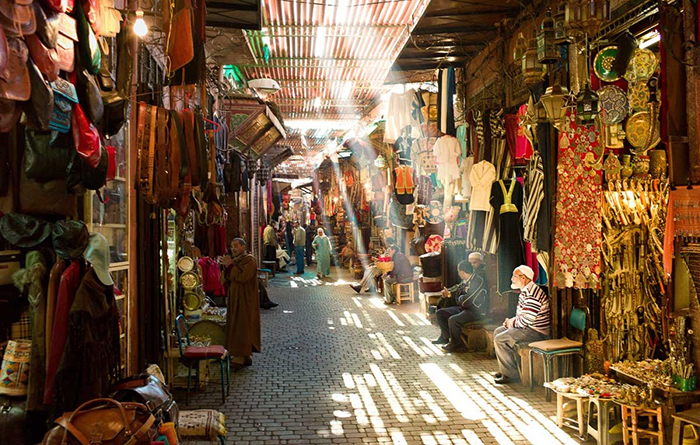
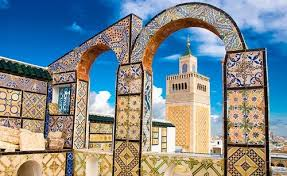

2.Le Musée National du Bardo
Situé dans un ancien palais du Bey, ce musée abrite la plus vaste et impressionnante collection de mosaïques romaines au monde, ainsi que d'autres artefacts de l'histoire tunisienne de la préhistoire à l'ère moderne.

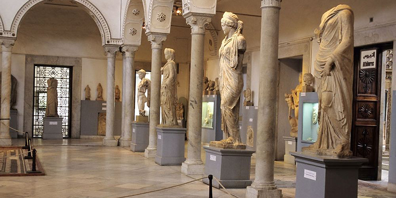

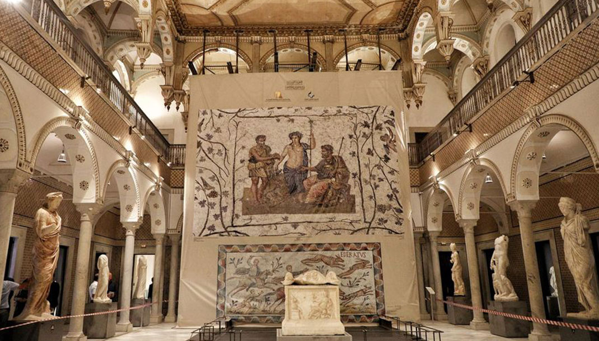
3.Le Site Archéologique de Carthage
À quelques kilomètres du centre-ville, visitez les ruines de l'ancienne puissance punique et romaine. Les points d'intérêt majeurs incluent les imposants Thermes d'Antonin, la colline de Byrsa, les ports puniques et le théâtre romain.
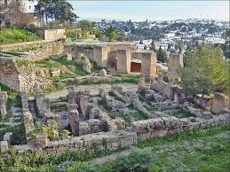
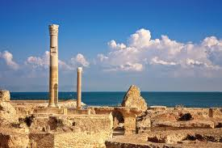
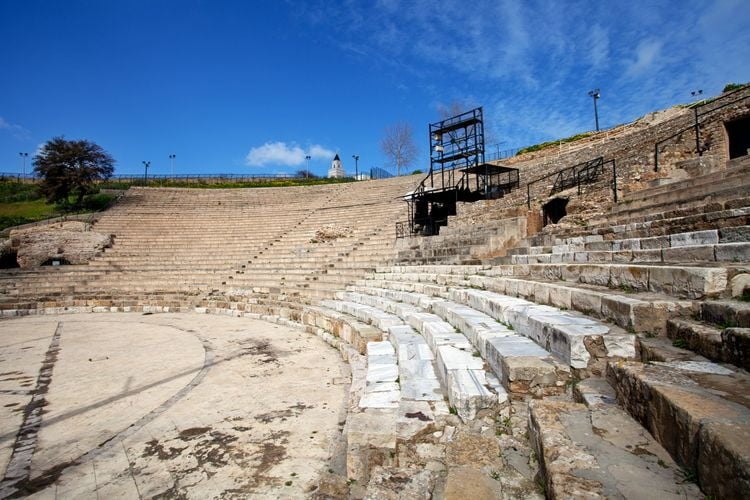
4. Sidi Bou Saïd
Un village pittoresque et emblématique, réputé pour ses maisons blanchies à la chaux, ses portes bleues ornées et ses vues imprenables sur le golfe de Tunis. Promenez-vous dans ses rues charmantes et détendez-vous dans ses cafés.
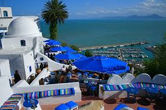
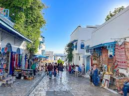


4. L'Avenue Habib Bourguiba
L'artère principale de la ville moderne, souvent comparée aux boulevards parisiens. Elle est bordée de cafés, de magasins, de théâtres (comme le Théâtre Municipal) et de l'impressionnante Cathédrale Saint-Vincent-de-Paul.
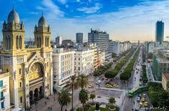
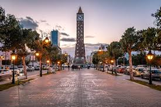
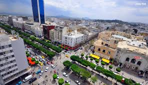
- Dar El Jeld : Souvent considéré comme l'un des meilleurs restaurants de Tunis, il propose une cuisine tunisienne raffinée dans le cadre magnifique d'un palais ottoman traditionnel au cœur de la Médina. L'ambiance et le service sont exceptionnels.
- Fondouk El Attarine : Un restaurant charmant situé dans un ancien fondouk (caravansérail) de la Médina. Il sert une cuisine tunisienne et méditerranéenne de qualité dans un cadre authentique et historique.
- La Cojina : Situé à La Marsa, cet établissement est réputé pour sa cuisine tunisienne traditionnelle servie dans une ambiance apaisante. C'est l'endroit parfait pour déguster un excellent couscous ou un plat de pâtes aux fruits de mer.
- Café des Nattes : Un lieu emblématique de Sidi Bou Saïd. Bien que très touristique et légèrement plus cher, c'est une expérience incontournable. Installez-vous sur les nattes, buvez un thé à la menthe (souvent avec des pignons) et profitez de la vue et de l'ambiance unique du village bleu et blanc.
- Café Lounge Ksar Ayed : : Pour une expérience unique au cœur de la Médina, ce café-restaurant offre un magnifique rooftop avec une vue imprenable sur la vieille ville. Le cadre est très chaleureux.
- El Ali : Un café-restaurant situé dans la Médina de Tunis, connu pour son ambiance artistique et bohème. C'est un endroit idéal pour déguster un café ou un thé tout en admirant des œuvres d'art locales.